4次提及“平等”,
职业教育重回“顶流”还会远吗？
职业教育重回“顶流”还会远吗？
2022年4月20日，第十三届全国人民代表大会常务委员会第三十四次会议通过《中华人民共和国职业教育法》（以下简称《职业教育法》）修订，完成了其颁布实施26年来的首次大修，新修订的《职业教育法》自2022年5月1日起正式施行。
此次修订引发了全社会广泛关注和讨论。长期以来，不少人对职业教育存在根深蒂固的刻板印象，将职校生等同于“差生”；而企业招聘也未能给予职校生足够的接受与肯定。另外，社会对职业教育的继续提升也有隐形的桎梏，进一步压缩了职校生提升自我的空间。在这种环境下，职校生往往陷入一种进退两难的局面——就业难、升学难。打破这一局面，让职业学校的学生在求学与就业上拥有真正平等的机会，获得更多正面的认识与肯定，正是此次《职业教育法》修订的重要目的。
第一部分：背景
当年读书贵 中专包分配
职业教育由来已久。新中国成立前，我们就已经开始重视职业教育的发展，倡导“知识和技术共有”的职业教育；1950年后，由于重工业的迫切需求，相关的章程更加侧重于“掌握现代科学技术”；20世纪80年代，为适应改革开放的需求，政府不仅加大了对职业教育的财政投入，还让职业教育办学面向市场，吸引来自社会各界的力量，降低了职校生的求学成本。各用人单位对基础技术型人才的需求，让职校生的就业率获得了巨大的提升。“当年读书贵，中专包分配”，政策的倾斜让职业教育成为了80年代的“顶流”，但随着90年代大学教育的发展以及毕业分配制度的调整，职校毕业生的就业优势大打折扣，职业院校曾经的优势明显式微，“顶流”光环迅速黯淡。
进入21世纪后，随着产业结构的调整以及数字化经济转型的深入，职业教育体系的建设再次回到了人们的视野之中。2014年，出于对职教人才“知识性”和“技术性”的需求，我国创造性地提出了“探索本科层次职业教育”的想法；2022年5月，《职业教育法》第一次修改，历史性地在法律层面明确了职业教育和普通教育的平等地位。

习近平总书记指出，在全面建设社会主义现代化国家新征程中，职业教育前途广阔、大有可为。作为培养高素质技术技能人才，使受教育者具备从事某种职业或者实现职业发展所需要的职业道德、科学文化与专业知识、技术技能等职业综合素质和行动能力而实施的教育，职业教育和本科教育就像河流的两条支流，共同承担起了培养国家栋梁之材的重要任务。职业教育正在迎来它的又一个“黄金机遇”。
(鼠标移动到图表可了解更多细节）
第二部分：发展
职教蓬勃发展 入学率等数据逐年攀升
目前，我国已建成全世界规模最大的职业教育体系，2021年高职学校招生总人数达到557万，相当于十年前的1.8倍；中职学校（不含技工学校）招生总人数达到489万，招生规模企稳回升。中高职学校每年培养1000万左右的高素质技术技能人才，为经济社会发展提供了源源不断的动力。
近年，随着我国产业升级进程的加快，各产业对于技术型人才的需求进一步提高，基础设施和办学体系的进一步完善，我国职业教育市场规模逐渐扩大，在2020年已达到6530亿元，市场规模前景更是大好。
在经济方面，国家对职业教育的投入支持不断。以广东为例，2012-2022年的十年间，职业教育投入超4000亿，就业率连年超95%。
十年来，专科生的实际在校人数不断攀升，2020年，专科生的实际在校人数已达到3285万，比2011年的2308万增长了将近二分之一；同时在总人数的百分比上，专科在校生人数也在缓慢上升，从2013年0.39%到2020年最高峰0.44%，专科在校生人数在总体上的占比也获得了一定的提升。
技能从未缺席，比赛结果见真章。2011年，我国首次派出代表团参加世界技能大赛（下称“世赛”），在焊接项目中，我国选手裴先峰获得了焊接项目的银牌，实现了奖牌榜零的突破。在接连的几届世赛中我国代表团的奖牌数不断攀升，第45届世赛我国选手共获52枚奖牌，其中金牌15枚，银牌14枚，铜牌17枚，优胜奖5项。
全国职业技能大赛（下称“国赛”）项目数于2013年达到100项，于2018年达到82项（2019年后的国赛由于改革因此不算入），而参赛人数仍呈继续上升的趋势，于2018年达到暂时顶峰。无论是世赛还是国赛，都表达了“以赛促学，以赛促教”的理念，从而展现选手的真才实学，符合职业教育本身的意义
职教发展，律法规章功不可没。目前，以“职业教育”“职业院校”等5个词汇为检索条件，筛选出的相关法律数量 为1255部，其中检索条件为“职业教育”的法律法规数量为 469 部，约占检索相关词汇法律总数的三分之一；“职业学校”和“职业院校”法律规范颁布数分别为288部与216部，超检索相关词汇法律总数的三分之一。
对比新旧《职业教育法》，许多词汇的出现频次有变。其中，“平等”（0% → 0.2%）一词更是首次出现在该法律中。
新修订的《职业教育法》第三条规定：职业教育是与普通教育具有同等重要地位的教育类型，是国民教育体系和人力资源开发的重要组成部分，是培养多样化人才、传承技术技能、促进就业创业的重要途径。从法律的层面规定了两者平等的地位。“平等”首现，充分体现了职业教育和本科教育应当被平等对待的理念，这有助于避免职业学校学生受到偏见与歧视，在各种报考、求职中因其学历身份而“低人一等”等现象。
(鼠标移动到图表可了解更多细节）
第三部分：困境
软肋与短板并存 职教发展亟需突破
近年来，我国对技术技能型人才的培养力度以及对职业教育的支持力度不断加大，然而我国职业教育发展状况依然不容乐观，社会观念、学校硬件、培养模式等问题尤为突出。
自我态度
学生自身态度不明确，但愿意加油努力。对于“专科学段的学习是否有价值”的提问，尽管“有用”等词汇出现频率高，但诸如“自卑”“没用”等偏消极词汇也具有不小的出现频率，同时“加油”“努力”也出现于其中。这体现了专科学生对自身学习与未来规划的迷茫矛盾，但并非无意愿加油努力。
社会眼光
学历是“敲门砖”，高学历是“硬通货”，一般用人单位更倾向选择高学历人才。这也是职校生求职时遇到的常见问题。只有让职业教育能够被人们所接受，能够在人们的心目中获得和普通教育一样的地位，职业教育才能够真正地融入现实，获得稳定而高效的发展。正如 新修订的《职业教育法》在法律层面明确了职业教育同其他教育类型的平等地位， 对于消除人们对职业教育的偏见发挥了积极作用。
除去思想上的“软肋”，硬件不足也是难啃的硬骨头。
职业院校教师的学历分布相对单一，主要师资学历集中在本科段。大专及以下学历占比约为7%，博士仅约1%，即使考虑到职业学校“双师型”教师队伍建设的特殊情况，这样的学历结构也难以保证教育质量与规模的正增长。
职业院校教师各类学历占比
专科
本科
硕士
博士
理论供给相对缺乏。目前的职业教育体系在很大程度上还是沿用普通教育理论，致使其缺乏足够的理论指导，从而使它的发展缺乏规划性和长远目标，并且职业教育在实际操作中也缺乏一套既符合教育理论、也符合职业教育特色的教育理论来规范具体的实践。
校企合作模式没有真正建立起来。在许多职业院校中，“校企合作”仅流于形式，企业参与职业教育的积极性不高。除此之外，企业与职业院校合作所获得的直接利益较少，多数校企合作关系的建立和维系主要靠“关系和信誉”，长效的机制没有建立起来。
(鼠标移动到图表可了解更多细节）
第四部分：破局
国校企三足鼎立 助推职教发展
新《职业教育法》第二十五条提出，企业可以利用资本、技术、知识等要素，举办或联合举办职业学校、职业培训机构；第三十条提出，鼓励企业提供一定比例的岗位设立学徒岗，鼓励和支持有技术技能人才培养能力的企业以工学结合的方式进行学徒培养；第三十一条提出，鼓励企业参与职业教育专业教材开发，将新技术、新工艺、新理念纳入职业学校教材。

《职业教育法》的首次大修促职业本科的发展，除了上文已经提及的《职业教育法》的大修所带来的“平等”和为“企业”谋福利等措施，我国近几年更是把”职业本科”带上了高速发展的道路。
职业本科是一种以职业发展需求为导向、以综合职业能力培养为重点、以产学研用结合为途径，紧密对接产业需求，以培养高层次技术技能人才为主要目标的教育类型。
职业本科是一种以职业发展需求为导向、以综合职业能力培养为重点、以产学研用结合为途径，紧密对接产业需求，以培养高层次技术技能人才为主要目标的教育类型。
校企融合是完善培养职教人才重要举措。对此，我们邀请了第45届世界技能大赛（混凝土建筑项目）冠军、广州城建技工学校实训教师陈君辉以及汕尾市职业技术学校讲师刘元红，对学校、师生、企业在促进职教发展和帮助学生更好就业的方法进行了讨论。
陈君辉：
陈元红：
如今职业院校虽然获得了不小的发展空间，但从长远来看，其发展的道路依然存在不小的压力和挑战。国家对职业教育持续支持，民众对职业教育态度的改善，有世赛、国赛的喜人突破，助全国形成“职教热”的热烈氛围。百尺竿头，更进一步。正如汕尾市职业技术学校讲师刘元红提到，职校老师应该更重视技能传授，同时，企业应该接纳职校学生，社会应该给予职校学生平等的眼光和信心。多举并施、各方齐心，职业教育一定会走出属于自己的发展之路，真正重回“顶流”也为时不远。
---------------------------数业有专攻--------------------------
作者：朱梅基 郑若彤 曾朋烽 罗绮璐 罗宝怡
指导老师：林琳 张屹
参考文献与资料：
[1]楼莹.基于校企协同育人模式的1+X证书制度运行管理机制研究[J].文教资料,2021(35):166-169.
[2]杨春平,冯蒙蒙.企业在职业教育中的地位和作用[J].商业文化,2021(05):137-139.
[3]陈禹,金花子,马婕姝.中国职业教育的百年发展历程、成就与经验[J].吉林省教育学院学报,2022,38(07):1-8.DOI:10.16083/j.cnki.1671-1580.2022.07.001.
[4]平和光,程宇,李孝更.40年来我国高等职业教育发展回顾与展望[J].职业技术教育,2018,39(15):6-17.
[5]张旭.浅谈职业教育的发展历程及展望[J].现代职业教育,2022(18):25-27.
[6]https://t.ynet.cn/baijia/32811202.html 齐鲁网闪电新闻：我国已建成全世界规模最大的职业教育体系 中高职学校每年培养1000万左右高素质技术技能人才.
[7]http://wfsj.weifang.gov.cn/sy/sjjl/202207/t20220701_6077100.html 潍坊市审计局审计交流：职业教育学校发展存在的问题及建议.
[8]孙丽虹.职业教育发展中的问题及其成因分析[J].科教导刊,2021(29):4-6.DOI:10.16400/j.cnki.kjdk.2021.29.002.
[9]https://baijiahao.baidu.com/s?id=1734865240204816711&wfr=spider&for=pc 北京日报：姚洋：职业教育改革还有四个问题或是困难有待解决.
[10]https://news.ifeng.com/c/7fbV7OjiC3z 齐鲁晚报：济宁退休教师李志合：上学拿补贴，毕业包分配，当年上个中专挤破头.
[11]http://m.haiwainet.cn/middle/345416/2015/1012/content_29242560_1.html 海外网：中国多少“尖子生”在那些年上了中专？
[12]http://news.hsw.cn/system/2017/1109/925545.shtml 澎湃新闻：一代中专生命运:当年学霸才能上 更多人在基层
[13]https://edu.gmw.cn/2021-04/30/content_34815687.htm《中国职业教育发展大型问卷调查报告》光明日报社《教育家》杂志